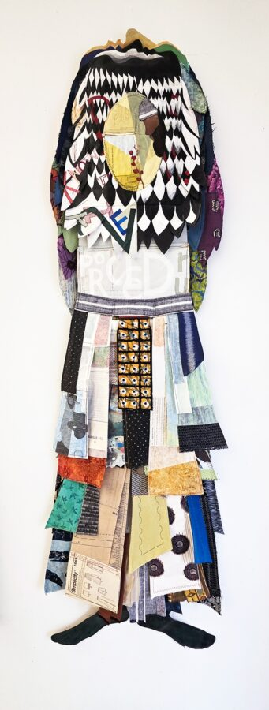

Russell Hamilton: Distances B-Tween Us
“Distances B-tween Us” by Russell Hamilton explores how physical movement, memory, and shifting environments shape the ways we relate to one another and to ourselves. The work thoughtfully considers the spaces between us – physical, emotional and cultural – and the influence that has on how we see the world. Through his use of a multitude of media such as paper, thread, fabric, wood and hardware, Hamilton delivers a body of work full of tactile texture and various elements that invite consideration and reflection. Hamilton’s own unique experiences of living in different places, languages and communities inform the sensibility of the work, not as direct subjects, but as quiet undercurrents.
Russell Hamilton is a multidisciplinary artist whose work explores movement, memory, and the ways objects carry cultural histories across time and geography. He holds a BA in Political Science from the University of Minnesota and an MFA in Sculpture from the University of Washington in Seattle. He is an alum of the Skowhegan School of Painting and Sculpture and a former Artist-in-Residence at the Studio Museum in Harlem. Hamilton has worked internationally as an artist, educator, and community collaborator in Minneapolis, Detroit, East Harlem, Seattle, Dubai, Abu Dhabi, and Obama City, Japan. His sculptures and installations have been exhibited throughout the United States, Asia, and the Middle East, with projects ranging from public art commissions to socially engaged community initiatives.
Hamilton has served as Assistant Professor at Wayne State University, Associate Professor in the College of Arts and Creative Enterprises at Zayed University in Abu Dhabi and Dubai, and most recently as Adjunct Associate Professor at the Minneapolis College of Art and Design. His awards include support from the Studio Museum in Harlem, the Jacob Lawrence Award, the Jerome Foundation, Intermedia Arts, and Pratt Fine Arts Center.
He currently maintains his studio practice in Minneapolis, where he lives with his family.